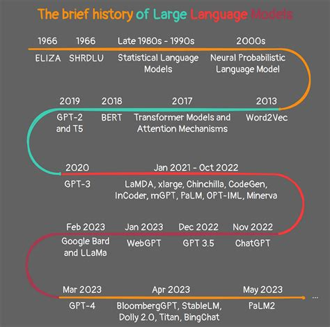

大语言模型发展现状与未来展望
发展现状
技术演进
大语言模型的发展经历了从统计语言模型、神经语言模型到预训练语言模型，再到当前的大型语言模型的演进过程。早期的统计语言模型依赖于规则和马尔可夫假设，但存在数据稀疏问题。随后，神经网络模型如RNN和Transformer架构的引入，使得模型能够更好地捕捉语义关系，并通过大规模无标注数据训练，实现了"预训练+微调"的范式。
关键技术
当前，Transformer架构是大语言模型的核心，其良好的可扩展性和分布式计算能力使其成为主流选择。此外，预训练技术和提示学习（Prompt Learning）技术也在大语言模型中得到了广泛应用，这些技术显著提升了模型的性能和适应性。
应用现状
大语言模型已广泛应用于自然语言处理（NLP）的多个领域，包括聊天机器人、内容生成、机器翻译、智能助手等。例如，ChatGPT展示了卓越的人机对话能力，而GPT-4则进一步提升了模型的生成能力和推理能力。此外，大语言模型还被应用于教育、医疗、金融等行业，提供了个性化学习、风险评估和市场预测等服务。
未来展望
技术趋势
- 多模态融合：未来的大语言模型将更加注重与其他模态（如图像、视频）的融合，以提升对复杂场景的理解能力。
- 轻量化与优化：为解决高资源消耗的问题，轻量化技术将成为研究重点，包括模型压缩、分布式推理和计算优化等。
- 可解释性与透明度：提高模型的可解释性，使用户能够理解模型的决策过程，将是未来的重要发展方向。
应用拓展
大语言模型将在更多领域实现应用，如智能教育、法律咨询、医疗诊断等。同时，垂直领域的定制化模型也将逐渐增多，以满足特定行业的需求。
社会影响与伦理
随着大语言模型的普及，其社会影响和伦理问题也日益凸显。如何确保模型生成内容的合规性、保护用户隐私以及避免偏见和歧视，将是未来需要重点关注的问题。